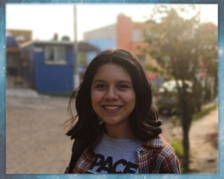

ADRIANA GONZÁLEZ TORRES
adriana.gonzalez.torres63@gmail.com
2284974275
Datos Generales
Edad:
20 años
Nacionalidad:
Mexicana
Xalapa, Veracruz, México.
Circuito Teodoro Adehesa,192
Estudios académicos
Tercer cuatrimestre de la carrera en Comunicación y Medios Digitales en la IUV Universidad Xalapa-Banderilla y cursando actualmente el tercer semestre en la carrera de Lengua Inglesa en la Universidad Veracruzana.
Escuela Secundaria y Bachilleres Experimental (Periodo 2014-2018, y 2018-2021), Xalapa-Enríquez, Ver.
Habilidades y Hobbies
Habilidades:
Me considero una persona que tiene capacidad para colaborar y trabajar con otros puedo generar nuevas ideas y enfoques para la solución de problemas.
Hobbies:
Organizar publicaciones para las redes sociales de un colectivo de voluntariado que realizo en mi municipio, me gusta leer libros, revistas y sitios de noticias en internet, me gusta investigar sobre temas de nuevas herramientas de desarrollo web, por esa razón quisiera ser capaz de crear páginas web y poder adentrarme al mundo del desarrollo web y aprender de loslenguajes necesarios.
Actividades y Reconocimientos
Participó en el programa de radio “Viernes Random” de la estación digital “Radio Live HD” durante el año 2021.
Asistencia Intercambio Académico Internacional ITSA-IUV Universidad 2022
Reconocimiento Habilidades para la Empleabilidad en el tema "Inteligencia Emocional" por la Secretaria de Trabajo Previsión Social y Productividad
Reconocimiento por su participación en el panel de discusión: "Juventud y los Retos Laborales" por la STPSP
Reconocimiento por la platica sobre "Diversidad Sexual y Derechos Humanos" brindada a personal de la U.S.A.E.R, Banderilla, Veracruz.
Participación en la "Jornada de Derechos Humanos" por la Comisión Estatal de Derechos Humanos de Veracruz.
Curso "Discapacidad y Derechos Humanos" por la Comisión Estatal de Derechos Humanos de Veracruz.
Participó en la ExpoDiverse2022 con su tienda digital "Flor Sáfica" el 13 y 14 de junio de 2022.
Participó en actividades de capacitación sobre “Ejercicio del periodismo y la comunicación con enfoque de derechos humanos y perspectiva de género” MPI CDMX 2022
Publicó en 2022 el artículo http://www.sucesos.mx/estatal/dia-internacional-de-lamujer-mujeres-marchan-por-el-8m-en-xalapa/ para la revista digital SucesosMX
Tomó Curso-Taller “Derecho Parlamentario y Técnica Legislativa” por el Colegio de Veracruz 11, 18 y 25 de junio de 2022.
Idiomas
Español
Inglés:Certificación First Certificate in English Nivel B2.
Nombramiento
Integrante del XVII Parlamento de la Juventud (Presentó iniciativa para la comisión de Educación y cultura en el Congreso del Estado de Veracruz 2022)